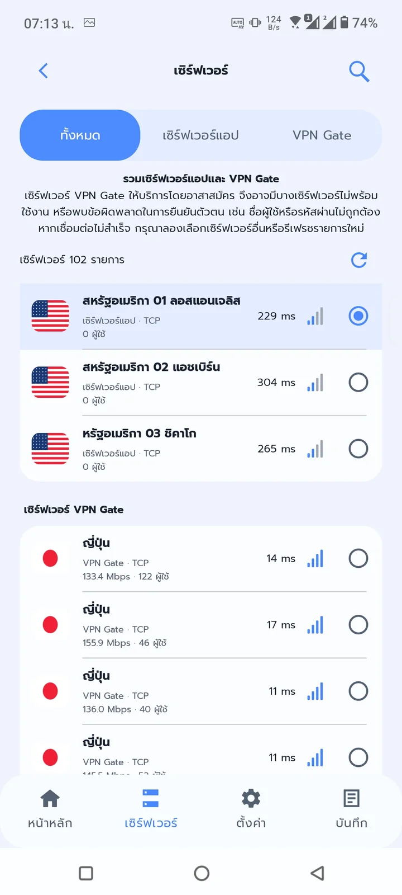
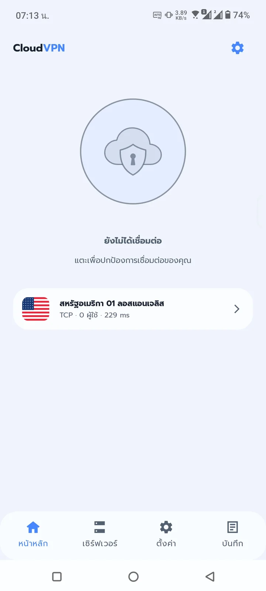
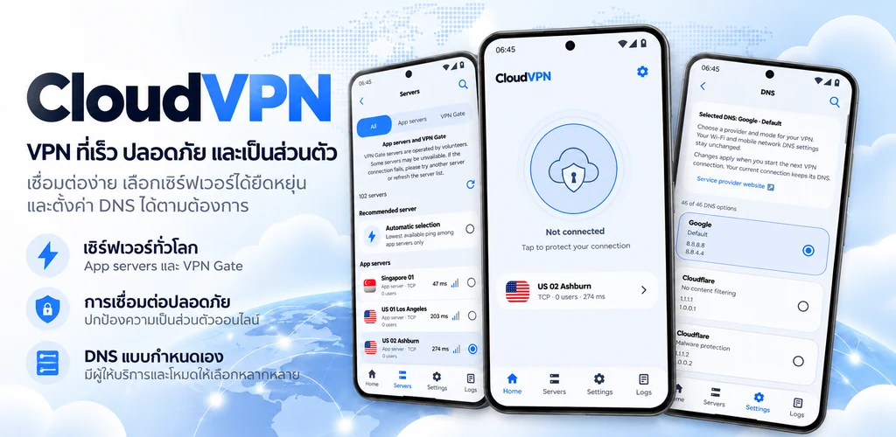
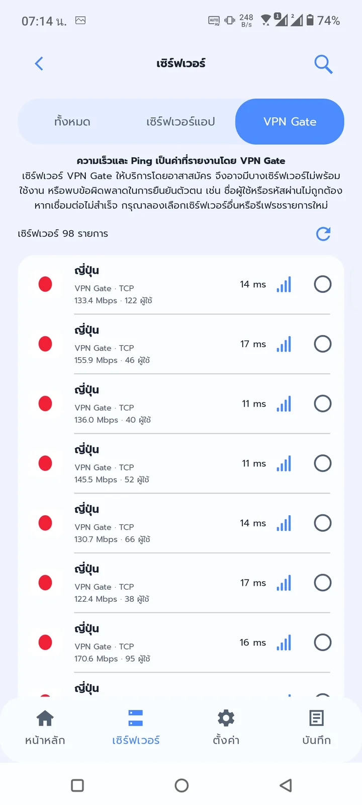
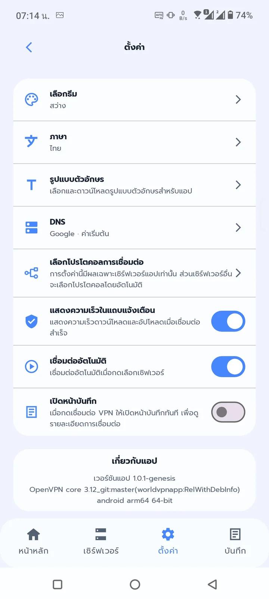
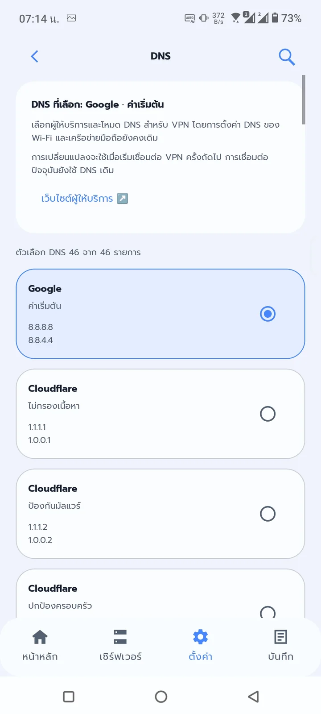

เชื่อมต่อไม่กี่ขั้นตอน
เลือกเซิร์ฟเวอร์และแตะเชื่อมต่อได้จากหน้าหลักของแอป
เรียบง่ายตั้งแต่เปิดแอปจนถึงการเชื่อมต่อ เลือกเซิร์ฟเวอร์ที่ต้องการ แล้วจัดการ VPN ได้ภายในไม่กี่ขั้นตอน ด้วย CloudVPN
สำหรับ Android · ต้องเชื่อมต่ออินเทอร์เน็ต


ออกแบบประสบการณ์การใช้งาน VPN ให้เข้าถึงง่าย โดยไม่เพิ่มความซับซ้อนที่ไม่จำเป็น
เลือกเซิร์ฟเวอร์และแตะเชื่อมต่อได้จากหน้าหลักของแอป
เรียกดูเซิร์ฟเวอร์ที่พร้อมใช้งาน รวมถึงหมวดหมู่ที่แสดงในแอป
ใช้เทคโนโลยี VPN เพื่อเข้ารหัสการรับส่งข้อมูลระหว่างอุปกรณ์และเซิร์ฟเวอร์ VPN
ดูสถานะและจัดการการเชื่อมต่อได้อย่างสะดวกจากตัวแอป
ปรับการตั้งค่าที่รองรับ เช่น ภาษา ธีม และตัวเลือกการเชื่อมต่อ
เหมาะกับการใช้งานอินเทอร์เน็ตทั่วไป ทั้งเว็บไซต์และบริการออนไลน์
ดีไซน์สะอาด อ่านง่าย เข้าถึงรายการเซิร์ฟเวอร์และการตั้งค่าต่าง ๆ ได้สะดวก
ภาพหน้าจอ
ภาพหน้าจอจากแอป CloudVPN จริงบน Android



ดาวน์โหลด CloudVPN จาก Google Play และเปิดแอปบนอุปกรณ์ Android ของคุณ
เปิดรายการเซิร์ฟเวอร์ แล้วเลือกตัวเลือกที่ต้องการใช้งาน
กดเชื่อมต่อและอนุญาตคำขอ VPN ของ Android เมื่อระบบแสดงขึ้นมา
หมายเหตุ: ความเร็วและความพร้อมใช้งานของเซิร์ฟเวอร์ขึ้นอยู่กับเครือข่ายและสภาพการให้บริการ
CloudVPN ใช้บริการ VPN ของ Android เพื่อเชื่อมต่ออุปกรณ์ของคุณกับเซิร์ฟเวอร์ VPN และส่งข้อมูลผ่านอุโมงค์เชื่อมต่อที่เข้ารหัส
ความเร็วขึ้นอยู่กับเครือข่ายที่คุณใช้ ระยะทาง สภาพเซิร์ฟเวอร์ และจำนวนผู้ใช้งานในขณะนั้น
เมื่อเริ่มเชื่อมต่อครั้งแรก Android อาจแสดงหน้าต่างขออนุญาต VPN โปรดตรวจสอบและยืนยันเพื่อเริ่มเชื่อมต่อ
ไม่ VPN สามารถช่วยปกป้องข้อมูลระหว่างอุปกรณ์กับเซิร์ฟเวอร์ VPN แต่ไม่สามารถรับประกันการไม่ระบุตัวตนหรือความปลอดภัยจากทุกความเสี่ยงได้
เชื่อมต่อ VPN และจัดการเซิร์ฟเวอร์ด้วยประสบการณ์ที่เรียบง่าย